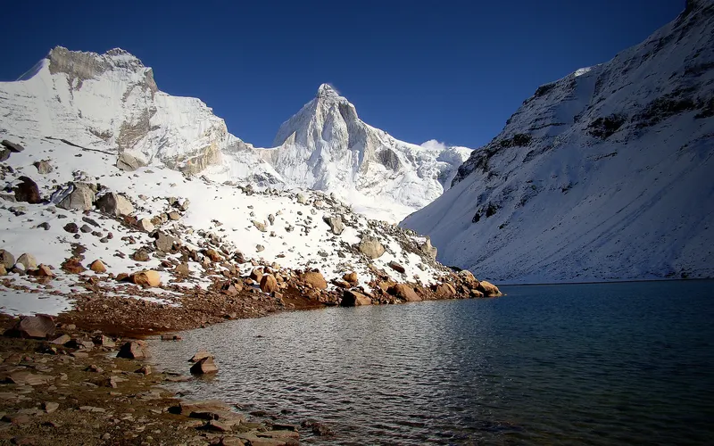
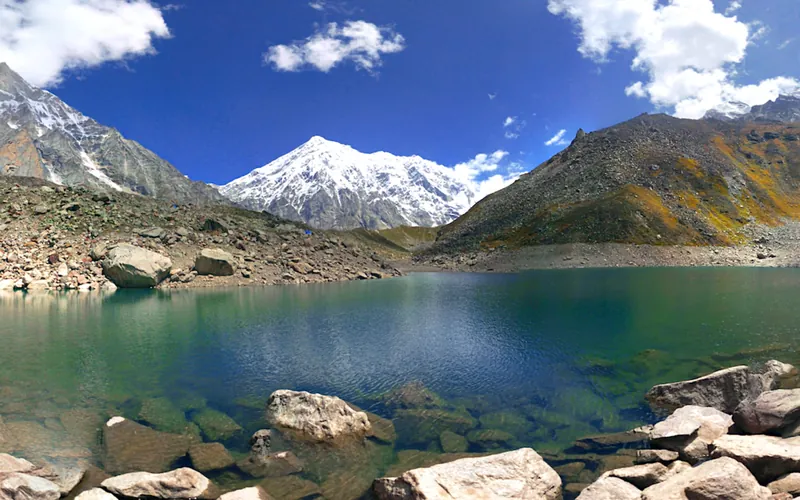
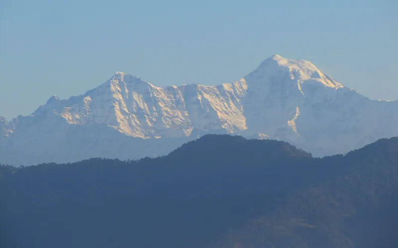

5 treks
Uttarakhand treks graded Moderate–hard or Hard in their sources.
| Trek | Highest point | Days on trail | Difficulty | Best months |
|---|---|---|---|---|
| Kedartal | 4,750 m | 7 | Moderate–hard | May–Jun, Sep–Oct |
| Roopkund | 5,029 m | 8 | Moderate–hard | May–Jun, Sep–Oct |
| Satopanth Tal | 4,346 m | 8 | Moderate–hard | May–Jun, Sep–Oct |
| Pangarchulla | 4,590 m | 7 | Hard | Mar–Apr, Oct–Dec |
| Bali Pass | 4,950 m | 8 | Hard | May–Jun, Sep–Oct |

Moderate–hard · 7 daysPhoto: Kailas98, CC BY-SA 3.0
Kedartal
▲ 4,750 m · Best May–Jun, Sep–Oct
Moderate–hard · 8 daysPhoto: Neha iitb, CC BY-SA 4.0
Roopkund
▲ 5,029 m · Best May–Jun, Sep–Oct
Moderate–hard · 8 daysPhoto: Photos Worldwide, CC0
Satopanth Tal
▲ 4,346 m · Best May–Jun, Sep–Oct
Hard · 7 daysPhoto: ShwethaSulegai, CC BY-SA 4.0
Pangarchulla
▲ 4,590 m · Best Mar–Apr, Oct–Dec
Hard · 8 daysPhoto: Paul Hamilton, CC BY-SA 2.0
Bali Pass
▲ 4,950 m · Best May–Jun, Sep–OctQuestions
Which are the difficult treks in uttarakhand?
The Treqz atlas lists Kedartal, Roopkund, Satopanth Tal, Pangarchulla, Bali Pass.
Which is the easiest of the difficult treks in uttarakhand?
Kedartal: graded Moderate–hard, 7 days on the trail.
Which is the highest of the difficult treks in uttarakhand?
Roopkund, with a highest point of 5,029 m.
Which is the shortest of the difficult treks in uttarakhand?
Kedartal: 7 days on the trail.